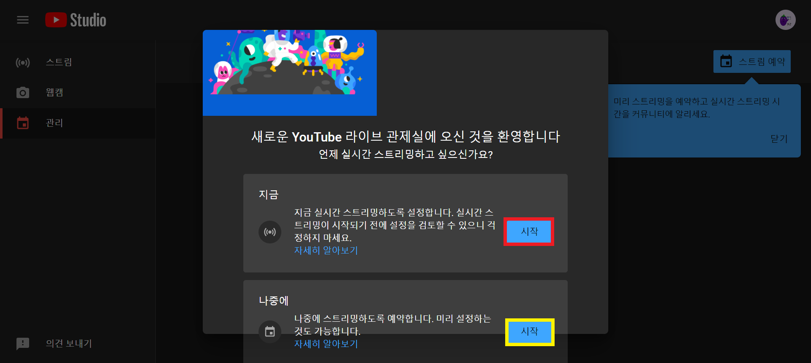
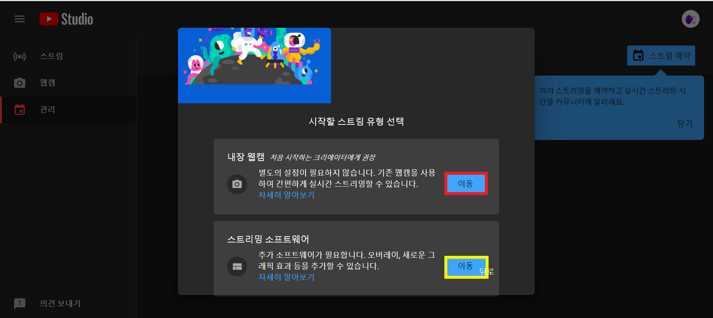

유튜브 라이브 스트리밍 만드는 법
스트리밍 할 시기와 카메라 선택하기
스트리밍을 지금 할지 나중에 할지 선택해줍니다.
만약 지금 선택하게 된다면 바로 시작하게 되고 나중에를 선택하게 된다면 자신이 원하는 시간에 시작됩니다. 
스트리밍을 할 때 보여지는 화면을 선택할 수 있습니다.
내장웹캠을 선택하면 컴퓨터에 있는 카메라로 진행할 수 있으며 스트리밍 소프트웨어를 선택하면 자신이 원하는 소프트웨어를 통해 진행할 수 있습니다.
스트리밍 소프트웨어를 이용하면 ppt,이미지 등등을 띄울 수 있습니다. 
내장웹캠 바로가기 스트리밍 소프트웨어 바로가기